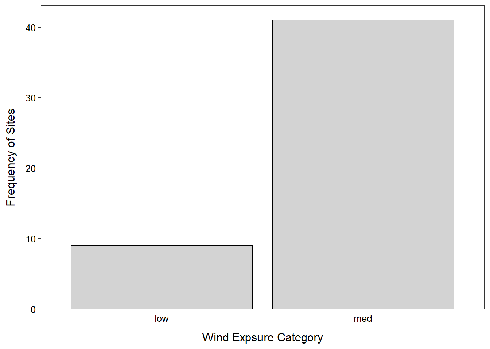
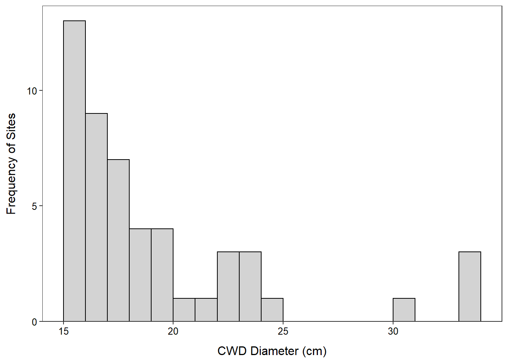
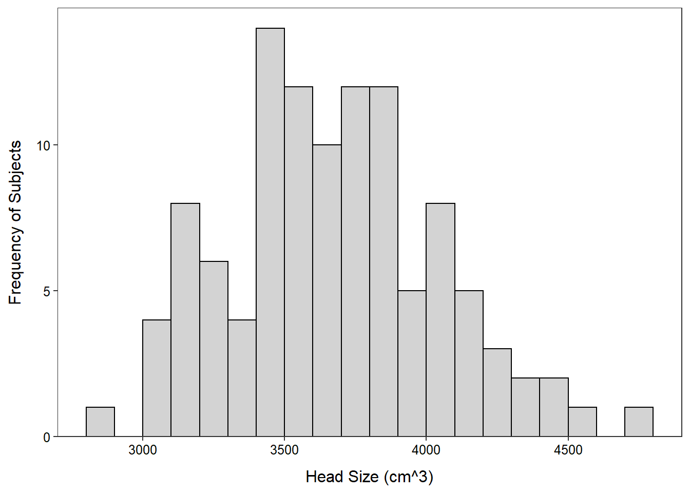
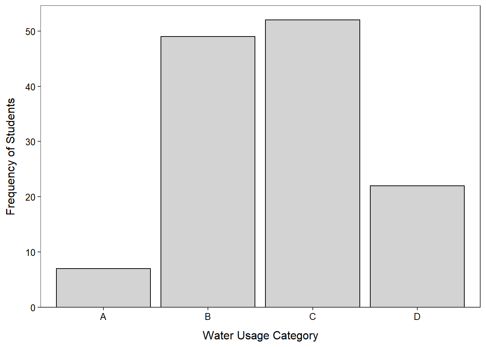

> cwdobj <- read.csv("cwd.csv")> str(cwdobj)'data.frame': 50 obs. of 2 variables:
$ diameter: int 21 15 18 23 18 17 19 17 15 22 ...
$ exposure: chr "med" "med" "med" "low" ...> ( freq1 <- xtabs(~exposure,data=cwdobj) )exposure
low med
9 41 > percTable(freq1)exposure
low med
18 82 > ggplot(data=cwdobj,mapping=aes(x=exposure)) +
geom_bar(color="black",fill="lightgray") +
labs(x="Wind Expsure Category",y="Frequency of Sites") +
scale_y_continuous(expand=expansion(mult=c(0,0.05))) +
theme_NCStats()
> Summarize(~diameter,data=cwdobj,digits=1) n mean sd min Q1 median Q3 max
50.0 19.5 4.9 15.0 16.2 18.0 20.8 34.0 > ggplot(data=cwdobj,mapping=aes(x=diameter)) +
geom_histogram(binwidth=1,boundary=0,color="black",fill="lightgray") +
labs(x="CWD Diameter (cm)",y="Frequency of Sites") +
scale_y_continuous(expand=expansion(mult=c(0,0.05))) +
theme_NCStats()
> bh <- read.csv("Brainhead.csv")> str(bh)'data.frame': 237 obs. of 4 variables:
$ head.size : int 4512 3738 4261 3777 4177 3585 3785 3559 3613 3982 ...
$ brain.weight: int 1530 1297 1335 1282 1590 1300 1400 1255 1355 1375 ...
$ gender : chr "male" "male" "male" "male" ...
$ age.group : chr "20-46" "20-46" "20-46" "20-46" ...> Summarize(head.size~age.group,data=bh,digits=1) age.group n mean sd min Q1 median Q3 max
1 20-46 110 3675.3 364.4 2857 3440 3641.5 3897.0 4747
2 46+ 127 3598.2 363.6 2720 3361 3582.0 3850.5 4488> ggplot(data=bh,mapping=aes(x=head.size)) +
geom_histogram(binwidth=100,boundary=0,color="black",fill="lightgray") +
labs(x="Head Size (cm^3)",y="Frequency of Subjects") +
scale_y_continuous(expand=expansion(mult=c(0,0.05))) +
theme_NCStats() +
facet_wrap(vars(age.group))
Most students either let the water run for 6-10 (37.7%) or 11-15 minutes (40.0%).
> wtr <- read.csv("shower.csv")> str(wtr)'data.frame': 130 obs. of 1 variable:
$ water.use: chr "D" "C" "B" "B" ...> ( freq1 <- xtabs(~water.use,data=wtr) )water.use
A B C D
7 49 52 22 > percTable(freq1)water.use
A B C D
5.4 37.7 40.0 16.9 > ggplot(data=wtr,mapping=aes(x=water.use)) +
geom_bar(color="black",fill="lightgray") +
labs(x="Water Usage Category",y="Frequency of Students") +
scale_y_continuous(expand=expansion(mult=c(0,0.05))) +
theme_NCStats()